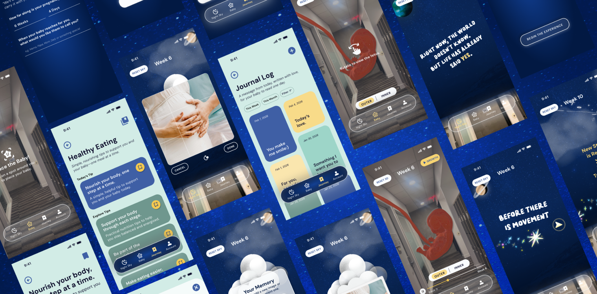
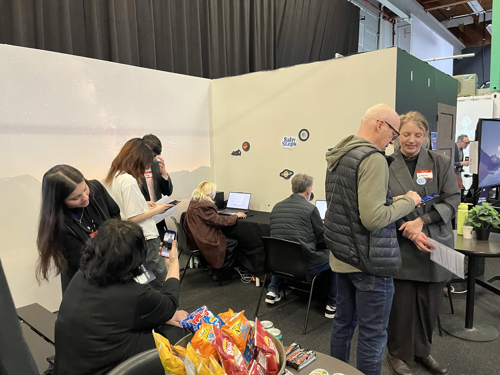

Designing an immersive AR experience for emotional bonding during pregnancy
BabySteps is an AR-based prenatal experience designed to support emotional bonding between expectant parents and their developing baby. Rather than focusing on tracking statistics, it transforms each week of pregnancy into an immersive night sky that evolves alongside the baby's growth, making fetal development something parents can witness, explore, and revisit.
The goal was to create an intuitive, comforting, and emotionally engaging experience that encourages both parents to actively participate in the pregnancy journey while connecting each interaction to real developmental milestones.
As a UI/UX Designer, I collaborated with a multidisciplinary team to shape the BabySteps experience, focusing on creating intuitive, engaging, and emotionally thoughtful interactions.

Expectant parents may find it difficult to feel connected to their developing baby, especially during the early stages of pregnancy. While many prenatal apps focus on providing developmental information and tracking pregnancy, fewer emphasize emotional engagement and meaningful experiences.
This can make fetal development feel abstract and distant. Partners may also have fewer opportunities to actively participate in the pregnancy journey, as many prenatal tools primarily focus on the gestational parent.
BabySteps aimed to explore how digital experiences could make fetal development more tangible, encourage emotional connection, and create opportunities for both parents to participate.
"How might we create meaningful experiences that help expectant parents connect with their developing baby while encouraging both parents to actively participate throughout pregnancy?"
We began by interviewing parents to understand emotional bonding during pregnancy, including their experiences, challenges, and opportunities for partner involvement. We also researched fetal development and reviewed existing prenatal applications to understand how pregnancy information and experiences were presented.
These findings helped us identify opportunities to create a more emotionally engaging experience beyond traditional pregnancy tracking.
We explored three initial concepts: a Scrapbook for preserving memories, a Bookcase for daily reflection, and a Constellation concept that visualized fetal development through celestial storytelling.
After further exploration, we selected the Night Sky direction for its potential to create a calm, immersive experience that represents the baby's growth throughout pregnancy. The concept also offered opportunities to combine AR storytelling with personal memories and journey tracking.
We validated the concept through two rounds of testing: an internal Figma prototype test with 42 participants and a live AR prototype test with 65 external participants.
Testing revealed positive responses to the immersive storytelling experience, with participants describing it as calm, magical, and emotionally engaging. However, several usability concerns emerged, including physical discomfort from holding phones overhead, the 3D baby model appearing too clinical or alien-like, and a lack of clarity around the connection between the Night Sky concept and fetal development.
These insights helped us identify opportunities to improve physical comfort, visual presentation, and onboarding.
Based on usability testing, we refined several aspects of the experience:

We designed BabySteps around the Night Sky, an immersive AR experience that represents fetal development through six narrative phases, from early pregnancy through birth.
To support this central experience, we developed two additional features: a 3D Baby Visualization that allows parents to explore their baby's development, and a Journey & Daily Log that encourages personal reflection and ongoing participation throughout pregnancy.
Together, these features aim to make fetal development more tangible, approachable, and emotionally meaningful.
Figma FileTo create an immersive AR environment that feels visually engaging, easy to navigate, and comfortable to explore.
To help parents explore fetal development through an interactive 3D model that feels approachable rather than overly clinical.
To provide a simple, low-pressure way for parents to document memories, reflect on their pregnancy journey, and stay involved.
A screen recording of the Night Sky AR prototype running in a real-world environment.
"Thanks again to everyone for all your hard work this semester! The product turned out great!"— Dan Block, Tandem Impact Collective
BabySteps challenged me to think beyond functionality and consider how emotional context, storytelling, and physical comfort influence the user experience.
This project strengthened my understanding of designing experiences that consider not only how users interact with a product, but also how they may feel while using it.